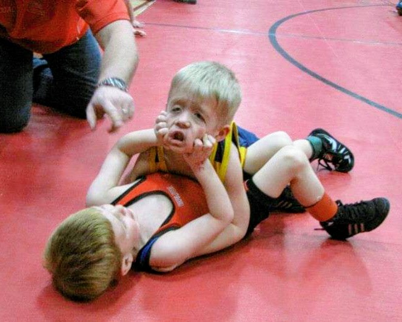

Directory
How I got interested in the UFC
At about 5 years old I began to wrestle and loved it until about 8th grade, even though I wrestled through highschool I just didn't enjoy it as much. This sport is what made me love MMA. My dad was the person who introduced me to the UFC and i watched it ever since. These two factors are the main reasons why I got interested in MMA and I am very grateful for it. I have witnessed many of the most iconic UFC fights of all time like most of Conor McGregor's fights, Lawler vs Macdonald 2, and many more. There is also tons of MMA fighters who also have a background in wrestling like:
- Bo Nickal: 3 time NCAA D1 national champion wrestler
- Gable Steveson: 2 time NCAA D1 national champion and Olympic gold wrestler
- Aaron Pico: U17 World champion and Olympic trials runner up
- Daniel Cormier: 2 time NJCAA national champion, NCAA D1 national runner up, 6 noncollegiate nation champion, and Olympic Bronze wrestler
- Henry Cejudo: first high school wrestler to win the senior U.S. national championship and Olympic gold wrestler
- Khabib Nurmagomedov: 2 time Combat Sambo(a form of wrestling) World Champion and Russian National champion.
- Islam Makhachev: 2 time Russian Combat Sambo champion and 1 time Combat Sambo World champion.
- Khamzat Chimaev: 3 time Swedish Freestyle national champion and Bronze in the Russian Junior nationals
There are many other great wrestlers but this list would be too long.
Also here is a funny picture of me wrestling when I was little, I amn the one getting his face clawed.
